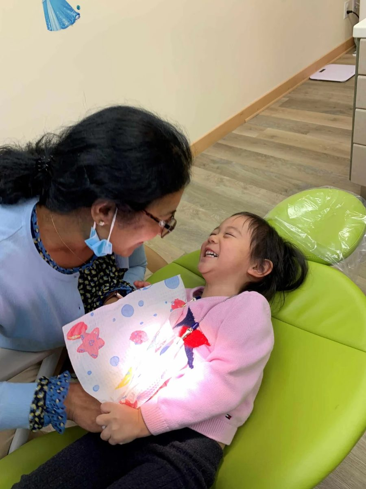

Sedation Options
Comfort and safety come first for every young patient in our care. For children who feel real fear in the dental chair, we offer sedation to help manage that anxiety, whether the visit is a routine cleaning or restorative work.
Before anything is decided, Dr. Anu Korada takes time to explain to parents how each type of sedation works, so you can choose the option that fits your child with a clear picture of what to expect.

When sedation makes sense
For many children, the usual behaviour techniques, going slowly, explaining everything, building trust visit by visit, are all the support they need. Some kids need a little more.
Severe anxiety, or simply being too young or not yet developmentally ready for a procedure, are the most common reasons we consider sedation. It is a judgment made together with you, never a default.
Three levels, matched to your child
Nitrous oxide
Better known as laughing gas, nitrous oxide has a long history in medicine, including easing pain during labour. Breathed through a small mask, it helps take the edge off anxiety and offers mild pain relief, and its effects fade quickly once the mask comes off.
Oral sedation
A medication taken by mouth that eases anxiety and makes your child drowsy while they stay conscious throughout. It is designed for use in an office setting like ours, so treatment does not need to move to a hospital.
General anesthesia
For severe anxiety, or when age or development means a child cannot yet cope with treatment while awake, a general anesthesia consultation may be the kindest path. Dr. Anu will discuss with you personally whether this option suits your child.
Have questions? Every child is different, and this page can only speak in generalities. If you would like more details about any of these options, please ask us. Talking it through with Dr. Anu is the best way to find the right fit for your child.
Dr. Anu Korada
Dr. Anu trained in the UK and was drawn to pediatric dentistry early on by the fun, innocence and honesty of children. A mother of two, she moved to Canada from London with her family and brings more than ten years of experience in pediatric and special care dentistry across both countries. She teaches pediatric dentistry at UBC and BC Children's Hospital.
She believes good oral hygiene is the gateway to good overall general health, and that giving children positive experiences and coping strategies for hard moments prepares them for a lifetime of comfortable dental care.